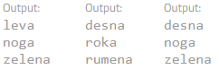

Tabornik Tine si pred trgovino ogleduje avtomat, v katerega vneseš podatek o ceni izdelka pred podražitvijo in podražitev v % (odstotkih). Preveril je njegovo delovanje in ve, da izpisuje previsoke cene izdelkov po podražitvi. Pomagaj ga mu popraviti, da bo pravilno računal in izpisoval cene izdelkov po podražitvi.
Tabornik Tine je na taborjenje vzel s seboj družabno igro Twister. Med pohodom ga je ujel dež in popolnoma uničil vrtljivi kazalec na kartonu, a k sreči podlagi iz blaga ni prišel do živega. Ker se je Tine v šoli naučil izdelovati aplikacije za mobilne telefone je hitro sprogramiral aplikacijo, ki bo naključno določila katero roko/nogo naj postavi na ustrezen barvni krog. Taborniki se že veselijo večernega druženja, aplikacija pa še ne deluje kot bi morala.
Pomagaj Tinetu dopolniti program, ki bo naključno izbral levo ali desno, roko ali nogo in eno izmed štirih barv (rdeča, modra, rumena, zelena) in jih po vrsti izpisal. Pogojnih stavkov ne spreminjaj!
